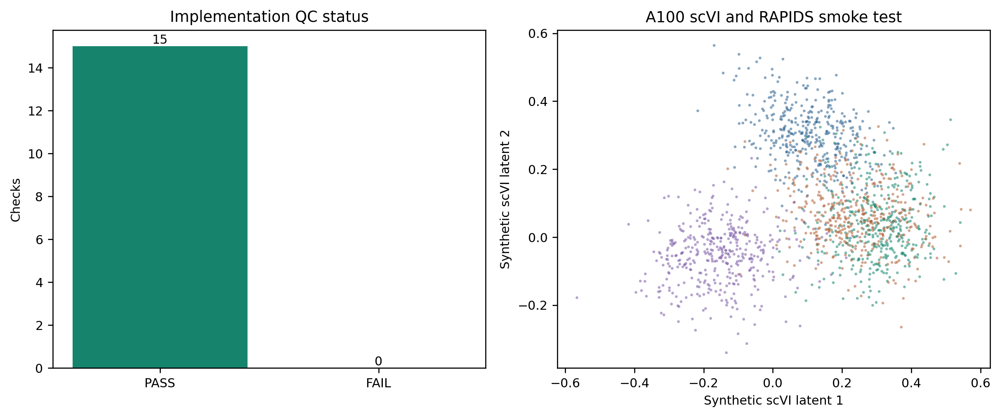

PASS_REVIEW_REQUIRED. The sidecar runner is implemented and passed deterministic unit, fail-closed, sparse-H5AD, direct-CUDA scVI, and RAPIDS clustering tests. No project-data integration, project-data scVI fit, pseudo-label construction, or classifier fit was performed.

The two implementation safety floors frozen before project-data execution are at least 20 independent anchors and at least 10 primary NK anchors per qualifying cluster. They prevent tiny-anchor clusters from passing a percentage rule by chance.
| check | status | detail |
|---|---|---|
| checksum_bound_preflight_approval | PASS | 2026-08-08T08:29:03+08:00 |
| development_locked_role_split | PASS | 6 development objects; 3 locked objects |
| locked_development_permissions | PASS | locked cohorts have zero development permissions |
| cpu_fallback_forbidden | PASS | scVI and RAPIDS project stages require CUDA |
| marker_threshold_truth_forbidden | PASS | cluster evidence only |
| pseudo_labels_cannot_control_guardrails | PASS | primary truth retains guardrail ownership |
| python_compile | PASS | three modules compiled |
| deterministic_unit_and_sparse_h5ad_tests | PASS | 11 passed in 2.52s |
| runner_validate_stage | PASS | checksum and role validation passed |
| project_data_stage_fails_without_approval | PASS | prepare aborted before SSD access |
| all_source_h5ads_unchanged | PASS | 9/9 size/mtime pairs unchanged |
| direct_cuda_a100 | PASS | NVIDIA A100 80GB PCIe; 79.3 GiB |
| synthetic_scvi_gpu_fit | PASS | latent=[1600, 8]; device=cuda:0 |
| synthetic_rapids_neighbors_leiden | PASS | clusters=4,4 |
| synthetic_gpu_no_cpu_fallback | PASS | direct CUDA only |
Project-data integration is still blocked. Activating
PROJECT_DATA_INTEGRATION_APPROVAL.json authorizes only
development-data sparse staging, scVI, consensus clustering, and
pseudo-label QC. It does not authorize classifier fitting, threshold
selection, model promotion, release fitting, or whole-atlas
inference.
configs/models/gdtai/v4_2_integration_execution.jsonworkflows/gdtai/run_gdtai_v4_2_nk_reference_integration.pyworkflows/gdtai/gdtai_v4_2_integration_core.pyIntegrated_dataset/logs/gdT_prediction/gdtai_v4_2_implementation_qc/PROJECT_DATA_INTEGRATION_APPROVAL_TEMPLATE.jsonIntegrated_dataset/tables/gdT_prediction/gdtai_v4_2_implementation_qc/implementation_qc_checks.csv